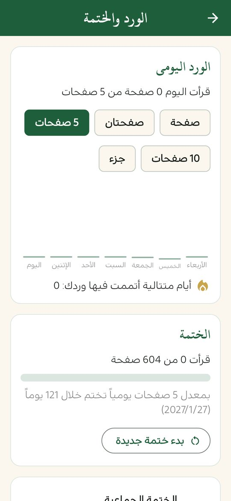
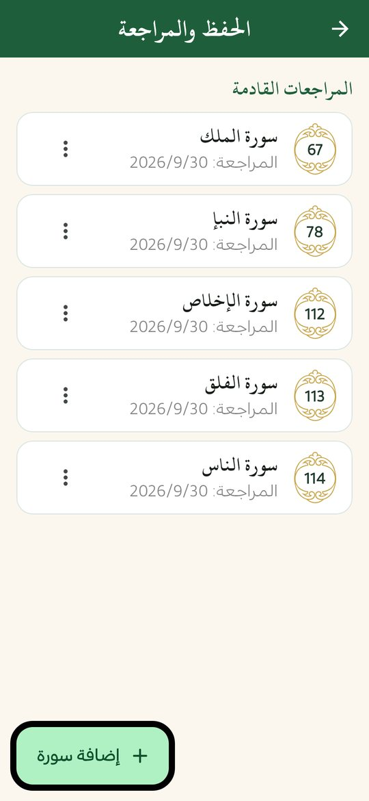
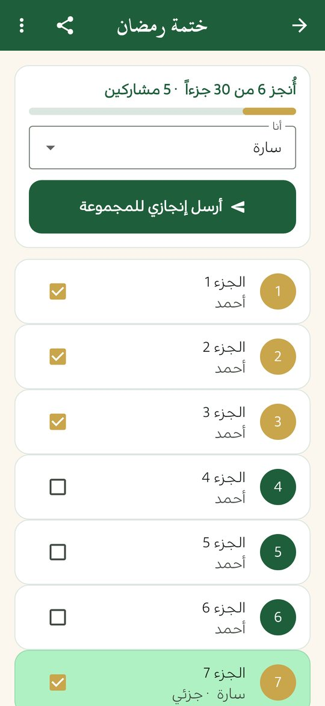

الورد اليومي والختمة والحفظ
ثلاثة أدوات تعينك على الالتزام بالقرآن: ورد يومي بهدف تحدده وتتبّع تلقائي، ومراجعة للمحفوظ على فترات متباعدة، وختمة جماعية مع من تحب دون خادم ولا تسجيل.
ملف APK لأندرويد 7.0 فأحدث · مجاني · دون إعلانات

الورد اليومي والختمة
- هدف يومي بالصفحات تختاره.
- تتبّع تلقائي للصفحات التي تقرؤها في المصحف.
- نسبة الختمة وموعد إتمامها المتوقع بحسب معدلك.
- رسم لآخر 7 أيام، وعدد الأيام المتتالية التي أتممت فيها وردك.
- تذكير بالورد إن لم يكتمل.
البيانات في الصورة أمثلة تجريبية
الحفظ والمراجعة
أضف السور التي تحفظها، فيذكّرك التطبيق بمراجعتها على فترات متباعدة: يوم، ثم 3 أيام، ثم أسبوع، ثم أسبوعان، ثم شهر، ثم شهران. وفي وضع «اختبر نفسك» تُخفى الآيات حتى تستحضرها بنفسك. ويمكنك كذلك تكرار مقطع من آية إلى آية بعدد مرات تختاره لتثبيت الحفظ.

البيانات في الصورة أمثلة تجريبية
الختمة الجماعية
ختمة مشتركة مع العائلة أو الأصدقاء دون خادم ولا تسجيل ولا حساب:
- أنشئ ختمة وأضف أسماء المشاركين، فتُوزَّع الأجزاء الثلاثون عليهم.
- شارك رسالة الختمة في واتساب أو أي تطبيق مراسلة.
- كل من يلصق الرسالة في التطبيق يرى جزأه ويفتحه في المصحف.
- بعد أن يُتمّ جزأه يرسل رسالة إنجاز يلصقها المنظّم ليتحدّث التقدّم.

الأسماء في الصورة أمثلة تجريبية
ملاحظات التدبّر
اكتب خاطرتك على أي آية من قائمة الضغط المطوّل، وتجد كل ملاحظاتك في مكان واحد مع بحث فيها. وتدخل الملاحظات في النسخة الاحتياطية.
أسئلة شائعة
هل تحتاج الختمة الجماعية إلى حساب؟
لا. لا خادم ولا تسجيل؛ تتم المشاركة برسائل تنسخها وتلصقها عبر أي تطبيق مراسلة.
كيف يعرف المنظّم تقدّم المشاركين؟
كل مشارك يرسل رسالة إنجاز عند إتمام جزئه، يلصقها المنظّم في التطبيق فيتحدّث التقدّم.
كيف يتتبّع التطبيق قراءتي؟
يسجّل الصفحات التي تقرؤها في المصحف تلقائياً ويحسب منها الورد ونسبة الختمة.
هل تُحفظ هذه البيانات؟
نعم على هاتفك فقط، وتدخل في النسخة الاحتياطية التي تنشئها أنت.
اقرأ أيضاً
حمّل منهج حياة مجاناً
القرآن والصلاة والذكر في تطبيق واحد، دون إعلانات ودون حساب.